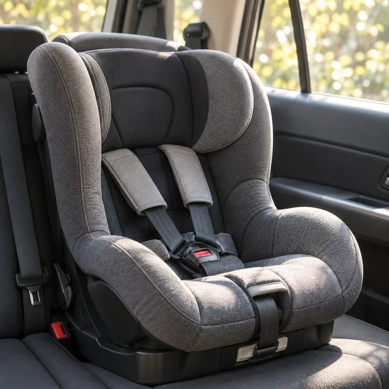

チャイルドシートの乗せ降ろしとベビーカー収納を、買う前に確認。
駐車場が狭い、玄関に置けない、階段で重い、車に積みにくい。毎日の困りごとを減らすために、家と車の寸法、出し入れの順番、持てる重さを先に確認します。

写真はイメージです。
まず結論。商品スペックより「毎日の動き」で見る
チャイルドシートは座らせる動作、ベビーカーは出す・たたむ・置く・積む動作が毎日あります。買う前にその動きを想像して、寸法と重さを入れて確認するのが一番現実的です。
チャイルドシートとベビーカーで測る場所
確認したい生活シーン
車のドア開き
駐車場が狭いと、乗せ降ろしの姿勢がつらくなります。ドアの開きと親の立ち位置を見ます。
玄関収納
ベビーカーを置いたあと、靴や荷物を出せるか。通路をふさがないかがポイントです。
車トランク
横幅だけでなく高さと奥行きも重要。買い物袋や旅行荷物と一緒に入るかも見ます。
買う前に測りたい場所
- 後部座席の幅とドア開口
- 駐車場でドアを開けられる幅
- 玄関の幅・奥行き・通路
- 車トランクの幅・奥行き・高さ
- 階段や公共交通で持てる重さ
ベビーカーの車への積み方と玄関収納は、「畳んだ後の住所」で決まる
店頭では走行性や開閉のしやすさに目が向きますが、家では畳んでいる時間のほうが長くなります。玄関に置くなら普段の通路幅を、車へ積むならトランクの開口・高さ・奥行きと、縦置きか横置きかを確認します。車輪が荷物や座席に触れない置き方まで決めておくと、毎回の積み下ろしが安定します。
玄関に常設する
外寸だけでなく、倒れにくさと家族が通れる幅を確認。ドア、靴箱、傘立ての開閉も一緒に試します。
帰宅直後に一時置きする
子ども、買い物袋、上着が同時に集まる場面を想定。荷物を下ろす場所とベビーカーを畳む順番を見ます。
車に積んでおく
トランクに入るだけでなく、買い物や旅行の荷物が残せるかを確認。持ち上げる高さと積む向きも見ておきます。
チャイルドシートは「急いでいる朝」で確かめる
車種適合と安全基準の確認は前提です。そのうえで、毎日使う駐車場に壁や隣の車がある状態を想像すると、カタログだけでは見えない負担を拾えます。
- よく使う駐車場所で、子どもを抱えたままドアをどこまで開けられるか
- 親が無理に腰をひねらず、体を車内へ入れられるか
- ベルトの留め具と調整位置が見つけやすく、手袋や冬服の日も扱えるか
- 子どもが嫌がった時に、いったん安全に待てる場所があるか
- 送迎を代わる家族にも操作手順を短く伝えられるか
悩み別入口
よくある疑問
チャイルドシートは安全性だけで選べばいい？
安全性と車種適合の確認を前提に、毎日の乗せ降ろし、車内スペース、駐車場でのドア開き、親の姿勢も確認します。
ベビーカーは折りたたみサイズだけ見ればいい？
折りたたみサイズに加えて、玄関の通路幅、車トランクの開口と高さ、積み込む向き、階段や公共交通で持てる重さも確認します。